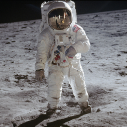
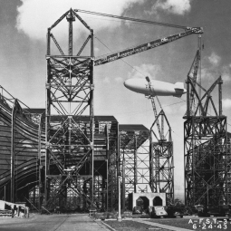
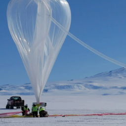
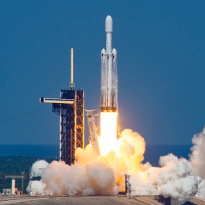
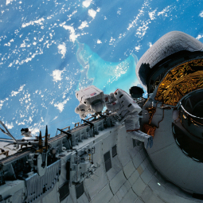
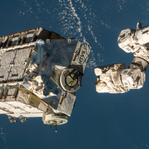
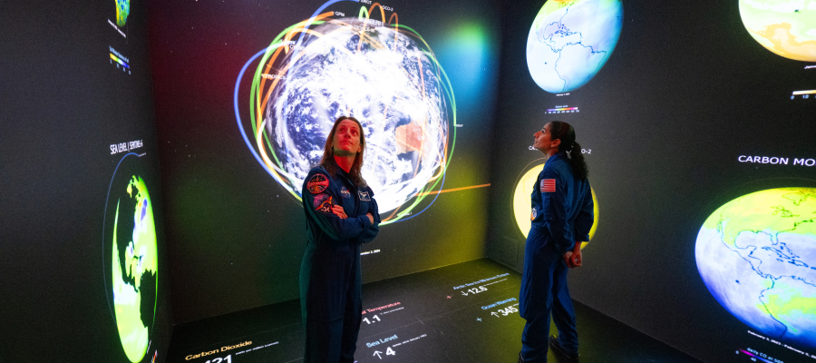
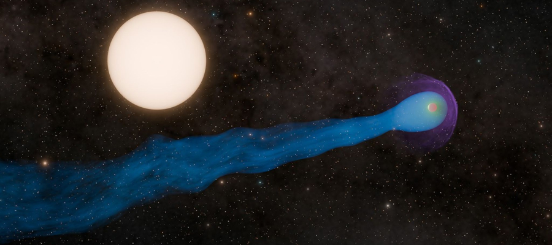
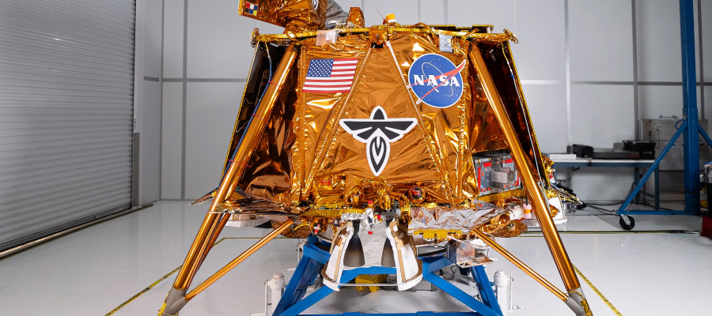
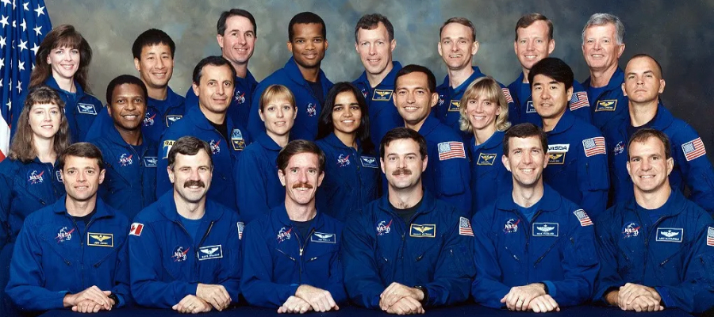

본문콘텐츠영역
ABOUT
moreNASA explores the unknown in air and space, innovates for the benefit of humanity, and inspires the world through discovery. For more than 65 years, NASA has made the seemingly impossible, possible. At its 20 centers and facilities across the country and with U.S. commercial companies and international partners, NASA leads studying Earth science, including climate, our Sun, solar system, and the larger universe. We conduct cutting-edge research to advance technology and aeronautics. We operate the world's leading space laboratory, the International Space Station, and will establish a sustainable and strong exploration presence on the Moon this decade through the Artemis campaign.
- 
- 
- 
NASA's future will continue to be a story of human exploration, technology, and science. We will go back to the Moon to learn more about what it will take to support human exploration to Mars and beyond. We will continue to nurture the development of a vibrant low-Earth orbit economy that builds on the work done to date by the International Space Station. NASA engineers will develop new technologies to improve air transport at home and meet the challenges of advanced space exploration. Our scientists will work to increase an understanding of our planet and our place in the universe.
- 
- 
- 
HISTORY
Since its founding in 1958,
NASA has pushed the boundaries of scientific
and technical limits to explore the unknown for all the citizens of our planet.
Discover the history of our human spaceflight, science, technology, and aeronautics programs.
A History of Innovation
When NASA opened for business on October 1, 1958, it accelerated the work already started on human and robotic spaceflight, and over the last 65 years it has continued to push the boundaries of aeronautics and space exploration. Now NASA is preparing to take humankind farther than ever before, as it helps to foster a robust commercial space economy near Earth, and pioneers further human and robotic exploration as we venture into deep space. Forged in response to early Soviet space achievements, NASA was built on the National Advisory Committee for Aeronautics (NACA), as the locus of U.S. civil aerospace research and development. Since October 1, 1958, when NASA opened for business, it has accelerated work on human and robotic spaceflight, and is responsible for scientific and technological achievements that have had widespread impacts on our nation and the world.
NEWS
more-

- NASA Astronauts O'Hara and
Moghbeli Explore Earth Data - On Dec. 4, 2024, NASA astronauts Loral O'Hara, left, and Jasmin Moghbeli spent a moment in part of the Earth Information Center, an immersive experience combining live NASA data sets with innovative data visualization and storytelling at NASA Headquarters in Washington. O'Hara and Moghbeli spent six months in space as part of Expedition 70 aboard the International Space Station.
- NASA Astronauts O'Hara and
-

- Discovery Alert: A Planet with a 'Tail'
- Hot Jupiters like WASP-69 b are super-hot gas giants orbiting their host stars closely. When radiation coming from a star heats up a planet's outer atmosphere, the planet can experience photoevaporation, a process in which lightweight gases like hydrogen and helium are heated by this radiation and launched outward into space.
-

- NASA to Discuss Firefly's First Robotic
Artemis Moon Flight - The lunar miszsion, named Ghost Riders in the Sky, will land near a volcanic feature called Mons Latreille within Mare Crisium, a more than 300-mile-wide basin located in the northeast quadrant of the Moon's near side. The mission will carry 10 NASA instruments and first-of-their-kind demonstrations to further our understanding.
- NASA to Discuss Firefly's First Robotic
-

- 30 Years Ago:
NASA Selects its 15th Group of Astronauts - On Dec. 8, 1994, NASA announced the selection of its 15th group of astronauts. The diverse group comprised 19 candidates-10 pilots and nine mission specialists, and included five women, two African Americans, one Asian American, and the first Peruvian-born and Indian-born astronauts.
- 30 Years Ago:
CENTERS
more-
- NASA Head Office
- Location : Washington, D.C.
Founded : 1958
People : 2,463
Director : Nichole Pinkney - NASA Headquarters, in Washington, provides overall guidance and direction to the agency, under the leadership of the Administrator. Ten field centers and a variety of installations around the country conduct the day-to-day work in laboratories, on air fields, in wind tunnels, and in control rooms.
-
- Ames Research Center
- Location : Moffett Field, California
Founded : December 20, 1939
People : 3,200+
Director : Eugene Tu - NASA's Ames Research Center, one of ten NASA field centers, is located in the heart of California's Silicon Valley. Since 1939, Ames has led NASA in conducting world-class research and development in aeronautics.
-
- Armstrong Research Center
- Location : Edwards, California
Founded : 1946
People : 1,100+
Director : Bradley C. Flick - NASA's primary center for high-risk, atmospheric flight research and test projects, with access to 301,000 acres of remote land, year-round flying weather, and the Bell X-1 Supersonic Corridor.
-
- Glenn Research Center
- Location : Cleveland, OH
Founded : 1941
People : 3,000+
Director : James A. Kenyon - Located near Cleveland Hopkins International Airport, Glenn's main campus, Lewis Field, has world-class facilities including wind tunnels, drop towers, vacuum chambers, and a research aircraft hangar.
GALLERY
Looking back from space, astronaut Edgar Mitchell once called Earth “a sparkling blue and white jewel.”
NASA has a unique vantage point for observing the beauty and wonder of Earth while trying to make sense of it.